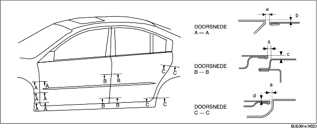

AFSTELLEN VOORPORTIER
B3E091158010W04
1. Meet de breedte van de spleet en het hoogteverschil tussen het voor- of achterportier en de carrosserie.
2. Draai de bouten van de scharnieren en de schroeven van de slotvanger los en stel het portier af.
-
Standaard speling
-
a: 2,7-4,7 mm {0,11-0,18 in}
-
b (bovenste): -1,0-1,0 mm {-0,040-0,039 in}
-
b (middelste): -0,5-1,5 mm {-0,020-0,059 in}
-
b (onderste): -0,3-1,3 mm {-0,027-0,051 in}
-
c (bovenste): -1,0-1,0 mm {-0,040-0,039 in}
-
c (onderste): -0,5-1,5 mm {-0,020-0,059 in}
-
d (bovenste): -1,0-1,0 mm {-0,040-0,039 in}
-
d (onderste): -0,5-1,5 mm {-0,020-0,059 in}

3. Draai de bouten en schroeven vast.